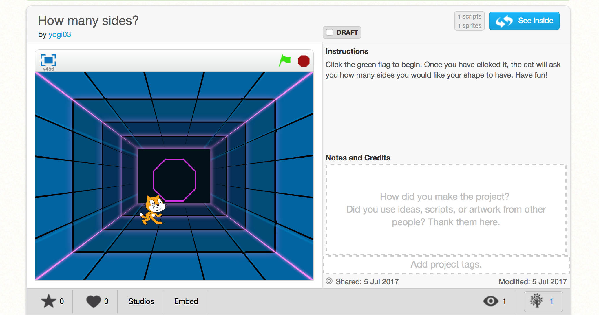

I am from El Paso, TX and will be a Senior in high school this coming August. I am a hard-working, active, and passionate young girl. I am very involved in my school and my community. I am hoping to pursue a career in International Business and Computer Science. This summer I am attending a summer immersion program with Girls Who Code at Pivotal, a software company. I am learning how to code, use HTML, and Python.
Recent Projects:
One of my most recent projects was on scratch. It is a shape drawer, the cat icon asks you how many sides you would like your shape to have and once you input the number it will draw a shape for you.
Some of my favorite thigs to do include yoga, hiking, taking pictures, and cooking. I try to stay as active as I can which is why one of the reasons I enjoy yoga and hiking, not only are they a form of excercise but it is a way for me to unwind and enjoy myself. I have always had a passion for taking pictures and have recently started taking pictures as a hobby. My passion for cooking is not only because I love to eat but I love being in the kitchen and creating new things, it is sort of a science lab for me where I can experiement with many ingredients and create new foods.
Portfolio of Pictures
email and phone number